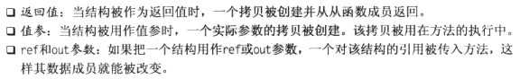
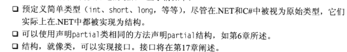
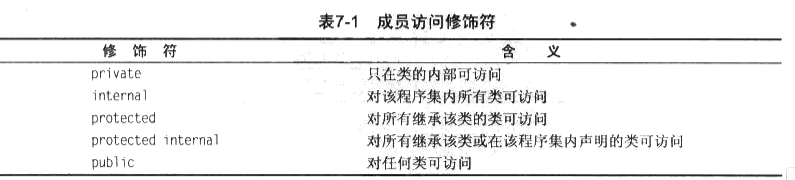
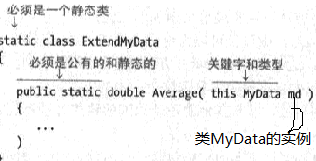
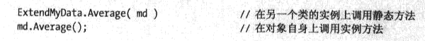
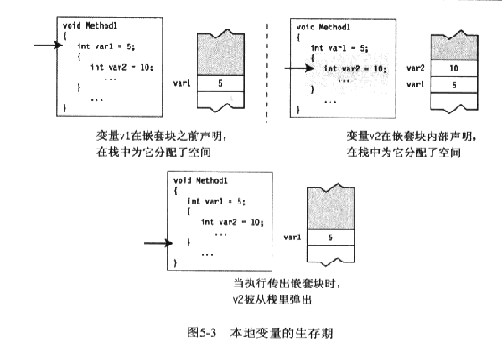

结构：1，类是引用类型而结构是值类型。2，结构是隐式密封的，它们不能被派生。
2，结构中字段初始化时不被允许的。结构派生自System.ValueType --> :object


数组：Rank：返回数组维度数的长度；Length：返回数组长度（数组中所有元素的个数）的属性。
委托：具有相同签名和返回值类型的有序方法列表，这样的对象叫做委托。
方法的列表成为调用列表；委托被调用时，它调用列表中的每一个方法。
调用委托中的方法：委托保存的方法可以来自于任何类和结构。只要包含如下2个提点：
1，返回值；2，签名（包含ref和out 修饰符）。3，调用列表中的方法可以是实例方法和静态方法。
声明委托类型：delegate void MyDel(int x);//只接受没有返回值和单个int参数的方法。①以Delegate开头，②，没有方法主体。
创建委托对象：MyDel deVar；//声明deVar为委托对象。2中创建方式：
事件：时间是成员而不是类型。主要的特性：1，必须声明在类结构中，和其他成员一样；2，不能在一段可执行代码中声明事件；3，事件成员被隐式自动初始化为null。
事件使用标准的预定义委托类型：EventHandler。
public delegate void EventHandler(object sender,EventArgs e);
button1.Click += (sender,e) => labelInfo.Text = "Button 被机种" ; //Lambda表到式
button2.Click += (sender, e) => labelInfo.Text = "Button2被击" ;
button2.Click += (sender, e) =>
{
MessageBox .Show("这仅仅出现在button2时间中" );
};
1，EventHander只允许2 个参数，object和EventArgs 作为基类是必须的。可以使用继承EventArgs 的类来完成传递参数。
2，
接口：1，接口不包含数据成员；2，接口只能包含如下静态成员函数声明：①方法；②属性；③事件；④索引。
,3，函数成员不包含任何实现成员；3，接口按照惯例使用I开头。接口是引用类型，引用一旦获得指向引用的类对象，就可以使用应用来点式使用成员。
1，隐藏基类成员：①声明一个相同类型的成员，使用相同的名称；②声明相同签名的函数成员，签名包括名称和参数列表；③使用new关键字显示隐藏，不然编译器会警告；④可以隐藏静态成员。⑤可以使用base关键字访问被隐藏的基类成员；
2，虚方法与覆盖方法：从上面可以看到基类引用指到派生类对象时，得到基类的成员，虚方法可以使基类引用访问升级到派生类中。满足如下条件：①，派生类方法和基类方法具有相同签名和返回类型，②，基类方法使用virtual标注；③，派生类方法使用override标注。
virtual和override修饰符重要信息：
1，覆盖和被覆盖方法必须具有相同的访问性；
2，不能覆写static方法和非虚方法；
3，方法、属性、索引、事件可以被声明为virtual和override。
3，覆盖方法可以出现在继承的任何层级，然后调用到终极。
333
如果使用new而不是override，那么自身应用到自己，强制类型装欢的基类引用则会只到override的级别。
4，类的访问修饰符：默认的为internal，表示只有程序集类可以访问。
5，成员的访问修饰符:protected internal为internal和protected的并集而不是交集。

6，抽象成员：抽象方法必须在派生类中相应方法覆写，但不能使用virtual修饰符加到abstract修饰符；抽象成员必须实现，使用override关键字。
7，抽象类：抽象类可以包含抽象成员，但不是必须的。任何派生值抽象类的类必须使用override关键字实现该类的所有成员，除非派生类自己也是抽象类。抽象类的非抽象成员在继承时可以使用。
8，密封类：使用sealed的类就是一个密封类，不可以被继承。
9，静态类：1，类本身必须被标记为static；2，类的所有成员必须是静态的；3，类可以有一个静态构造函数，但不允许有实例构造函数；4，不能继承静态类，它是密封的。
10，拓展方法：1，拓展方法必须声明为static；2，拓展方法所在的类也必须声明为static；3，拓展方法必须包含关键字this作为它的第一个参数类型，
 拓展方法好处，在对象自己身上搞定：
11，外部方法：
用户定义类型：
C语言是一组函数和数据类型；C++是一组函数和类；C#是一组类型声明。
6中可自定义的类型：类（class）、结构（struct）、数组（array）、枚举（enum）、委托（delegate）、接口（interface）。
5中成员访问控制修饰符：private、public、protected、internal、protected internal。
字段、本地变量：本地变量没有隐式初始化，如果没有赋值，编译器 就会产生一条错误信息；字段会按照类型默认初始化。
存储区域中类的所有字段都存储在堆中，而本地数据会存放在栈中。
var关键字可以根据初始化的右边推断出类型，在C# 3.0中可以引入，var的重要条件：1，只能用于本地变量，不能用于字段,2，只能在变量声明包含初始化时使用；3，一旦编译器推断ao出内心，它就是不可更改类型的。
var类型不线javascript中可以引用不同的类型，它只是从等号右边推断出而已，var不改变C#的强类型性质。

特别要注意的是：在C和C++中，可以先定义一个本地变量，然后嵌套块中定义另一个相同名称的本地变量，在内部范围，内部名称掩盖了外部名称。然而在C#中不管嵌套级别如何，都不能在第一个名称的有效范围内声明另一个同名的本地变量。
本地常量：很类似本地变量，一旦被初始化就不能更改，如同本地变量，本地常量必须声明在块的内部。重要的特征：1，声明中必须初始化；2，初始化之后不能更改。可以是null引用，但不能是某个对象的引用。因为对象是在运行时决定的。const Type Identifer = Value--->初始化值时必须的。 也是在声明快的结束范围内结束，和本地变量是一样的。
static int 和const int 静态量和常量的区别在于，静态量总是类访问，常量不可更改。所以不必static，也不可。例如static const int 不被编译通过。
控制流：for：循环---在顶部测试；while：循环---在顶部测试；do：循环---在底部测试；foreach---为一组中每个成员执行一次；break---跳出当前循环，continue---到当前循环底部；goto：到一个命名的语句；return---返回到发起调用的方法。
方法调用：英文中call（调用）和invoke方法是同义的。
参数数组：FUN(params int[] inVals){} 注意点：1，在一个参数列表中只能有一个参数数组，2，如果有，它必须是参数数组的最后一个。
声明方法：1，在数据类型前使用params修饰符；2，在数据类型后放置一组空的方括号。：1，数组是整齐的相同数据类型的数据项；2，使用数字索引访问；3，引用类型，所有数据项保存在堆中。
注意：参数数组在声明时需要使用修饰符，在使用时不允许使用修饰符。值参数的声明和调用都不带修饰符；引用参数和输出函数在2个地方都需要修饰符。
成员常量：使用在类声明中，虽然表现的像一个静态变量，但是不可以使用static。class A{public const int A;}。
静态构造函数：
静态构造函数用于初始化任何静态数据，或用于执行仅需执行一次的特定操作。在创建第一个实例或引用任何静态成员之前，将自动调用静态构造函数。 静态构造函数既没有访问修饰符，也没有参数。
1，在创建第一个实例或引用任何静态成员之前，将自动调用静态构造函数来初始化类。
2，无法直接调用静态构造函数。
3，在程序中，用户无法控制何时执行静态构造函数。
4,静态构造函数的典型用途是：当类使用日志文件时，将使用这种构造函数向日志文件中写入项。
5,静态构造函数在为非托管代码创建包装类时也很有用，此时该构造函数可以调用 LoadLibrary 方法。
IDisposable:实现该接口可以迅速的结束非托管资源。Dispose方法。
readonly类似于const ，但是可以在运行时初始化。